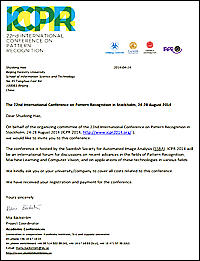
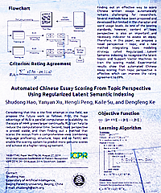

[ICPR 2014]
[ICPR 2014]
[Flag of Sweden]
 [Letter of Invitation]
 [Poster]
2nd Conference Article
Automated Chinese Essay Scoring From Topic Perspective Using Regularized Latent Semantic Indexing (2014)
Presented as poster at: 22nd International Conference on Pattern Recognition 2014, Stockholm, Sweden.
This is a festival for scholars working in Pattern Recognition, and is the second time I attended an international conference. By this conference, I visited the modern-and-ancient city in Europe: Stockholm, Sweden. It is an unforgettable conference and an unforgettable travel too.
This paper is about scoring Chinese essays from topic perspective. Conventionally, essays are scored from content perspectives or word usage and so forth. That works, but the limitation is that, there are many other aspects that human raters have to take into consideration. Therefore, we intended to use algorithms from other fields, like topic modeling, to complete scoring from topic perspective. The work in this paper is inspired by a new method Regularized Latent Semantic Indexing (RLSI) proposed by Quan Wang. We wish this algorithm could provide new power to our goal. At the same time, other algorithms, like Latent Dirichlet Allocation (LDA), are also tested to this end.
This conference is a festival, and it was the first time when I attended such a large-scale one. ICDAR 2013 was more specific maybe, so the number of participants was only, like, 200 people or more. But this time, there were more than 700 participants. Also, there were more tracks, including almost every aspect in Pattern Recognition: computer vision, bioinformatics, document analysis and so forth. My presentation day is August 27, 2014. In the exactly same day in 2013, I debutted in Washington DC and presented my first paper. It was like an anniversary (I realized this fact only after I was back to my home). The welcome reception was held in The City Hall, where the Nobel Banquet is held every year as well. Besides, the banquet was also of large scale, with very traditional Swedish dishes and band performance. The whole conference was impressive.
This is also the first time I travelled on my own. But in fact, I met many new friends from China. They were very talented and passionate about what they are working on. It is fortunate that in a country far away from my home, I met them and spent time together. I believe someday we will gather somewhere else. The seven-day stay in Stockholm was like a dream, where the sky was so blue and the air was so clean. I am not sure whether I will have another chance to be in Stockholm once more in my life; but if there is a chance, I will be there.
BTW, ICPR 2016 is pronounced to be held in Cancun, Mexico. It's heard of that ICPR 2018 will be held in Beijing, China, but I'm not sure.